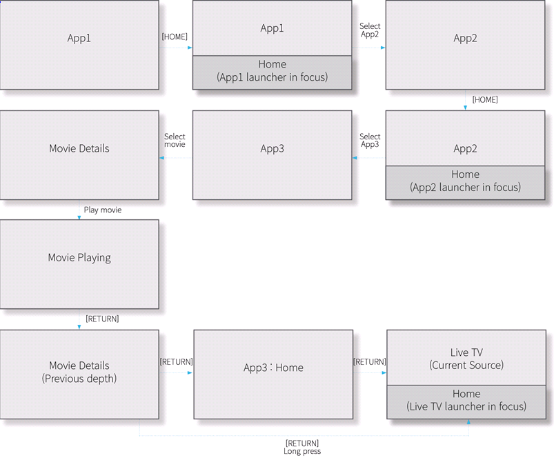
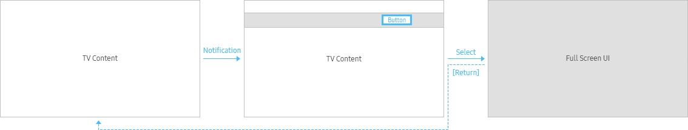

The Return function allows users to go back to the upper depth.
Exit function will close every application and the previous source screen will be displayed.
Usage
Basic Flow
- Pressing the [RETURN] button takes users to the previous depth within the App, until reaching the App Home Screen, then to previous source.
When users go back to the previous depth, the highlight basically will be in the same position of the previous depth.
- Even if users go to a specific depth of an app directly from the outside of the app, pressing the [RETURN] button takes users to the previous depth within the app’s hierarchy.
- From anywhere within an App experience, long pressing the [RETURN] button, or any event where the TV system handles an app exit and returns to the current source.

Exceptional Cases
In the following cases, entry points are not included in the return path :
- When UI components disappear after displaying a notification or an entry point
Example: Notification, Popup for messages, Channel List > Tab Area, etc.

- When a screen remains unchanged in the hierarchy
Example: Changes in the View Options (Category/Filtering/Sorting/Resize), etc.